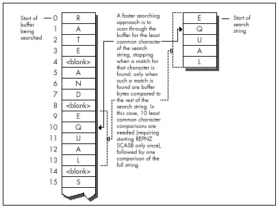

| Previous | Table of Contents | Next |
Listing 9.1 implements the scan-on-first-character approach. Listing 9.2 scans for whatever character the caller specifies. Listing 9.3 is a test program used to compare the two approaches. How much difference does Rob’s revelation make? Plenty. Even when the entire C function call to FindString is timed—strlen calls, parameter pushing, calling, setup, and all—the version of FindString in Listing 9.2, which is directed by Listing 9.3 to scan for the infrequently-occurring “Q,” is about 40 percent faster on a 20 MHz cached 386 for the test search of Listing 9.3 than is the version of FindString in Listing 9.1, which always scans for the first character, in this case “E.” However, when only the search loops (the code that actually does the searching) in the two versions of FindString are compared, Listing 9.2 is more than twice as fast as Listing 9.1—a remarkable improvement over code that already uses REPNZ SCASB and REPZ CMPS.
What I like so much about Rob’s approach is that it demonstrates that optimization involves much more than instruction selection and cycle counting. Listings 9.1 and 9.2 use pretty much the same instructions, and even use the same approach of scanning with REPNZ SCASB and using REPZ CMPS to check scanning matches.
|
The difference between Listings 9.1 and 9.2 (which gives you more than a doubling of performance) is due entirely to understanding the nature of the data being handled, and biasing the code to reflect that knowledge. |

Figure 9.2 Faster searching method for locating a text string.
LISTING 9.1 L9-1.ASM
; Searches a text buffer for a text string. Uses REPNZ SCASB to sca"n
; the buffer for locations that match the first character of the
; searched-for string, then uses REPZ CMPS to check fully only those
; locations that REPNZ SCASB has identified as potential matches.
;
; Adapted from Zen of Assembly Language, by Michael Abrash
;
; C small model-callable as:
; unsigned char * FindString(unsigned char * Buffer,
; unsigned int BufferLength, unsigned char * SearchString,
; unsigned int SearchStringLength);
;
; Returns a pointer to the first match for SearchString in Buffer,or
; a NULL pointer if no match is found. Buffer should not start at
; offset 0 in the data segment to avoid confusing a match at 0 with
; no match found.
Parmsstruc
dw 2 dup(?) ;pushed BP/return address
Buffer dw ? ;pointer to buffer to search
BufferLength dw ? ;length of buffer to search
SearchString dw ? ;pointer to string for which to search
SearchStringLength dw ? ;length of string for which to search
Parmsends
.model small
.code
public _FindString
_FindStringprocnear
push bp ;preserve caller’s stack frame
mov bp,sp ;point to our stack frame
push si ;preserve caller’s register variables
push di
cld ;make string instructions increment pointers
mov si,[bp+SearchString] ;pointer to string to search for
mov bx,[bp+SearchStringLength] ;length of string
and bx,bx
jz FindStringNotFound ;no match if string is 0 length
movd x,[bp+BufferLength] ;length of buffer
sub dx,bx ;difference between buffer and string lengths
jc FindStringNotFound ;no match if search string is
; longer than buffer
inc dx ;difference between buffer and search string
; lengths, plus 1 (# of possible string start
; locations to check in the buffer)
mov di,ds
mov es,di
mov di,[bp+Buffer] ;point ES:DI to buffer to search thru
lodsb ;put the first byte of the search string in AL
mov bp,si ;set aside pointer to the second search byte
dec bx ;don’t need to compare the first byte of the
; string with CMPS; we’ll do it with SCAS
FindStringLoop:
mov cx,dx ;put remaining buffer search length in CX
repnz scasb ;scan for the first byte of the string
jnz FindStringNotFound ;not found, so there’s no match
;found, so we have a potential match-check the
; rest of this candidate location
push di ;remember the address of the next byte to scan
mov dx,cx ;set aside the remaining length to search in
; the buffer
mov si,bp ;point to the rest of the search string
mov cx,bx ;string length (minus first byte)
shr cx,1 ;convert to word for faster search
jnc FindStringWord ;do word search if no odd byte
cmpsb ;compare the odd byte
jnz FindStringNoMatch ;odd byte doesn’t match, so we
; haven’t found the search string here
FindStringWord:
jcxz FindStringFound ;test whether we’ve already checked
; the whole string; if so, this is a match
; bytes long; if so, we’ve found a match
repz cmpsw ;check the rest of the string a word at a time
jz FindStringFound ;it’s a match
FindStringNoMatch:
pop di ;get back pointer to the next byte to scan
and dx,dx ;is there anything left to check?
jnz FindStringLoop ;yes-check next byte
FindStringNotFound:
sub ax,ax ;return a NULL pointer indicating that the
jmp FindStringDone ; string was not found
FindStringFound:
pop ax ;point to the buffer location at which the
dec ax ; string was found (earlier we pushed the
; address of the byte after the start of the
; potential match)
FindStringDone:
pop di ;restore caller’s register variables
pop si
pop bp ;restore caller’s stack frame
ret
_FindStringendp
end
| Previous | Table of Contents | Next |